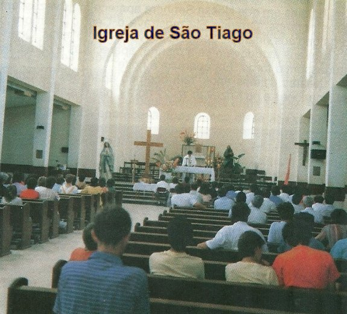
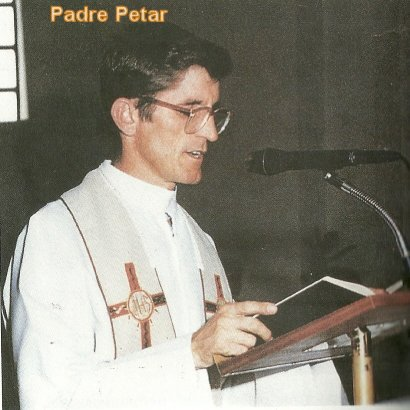
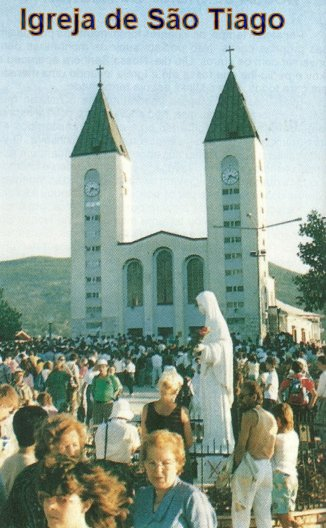
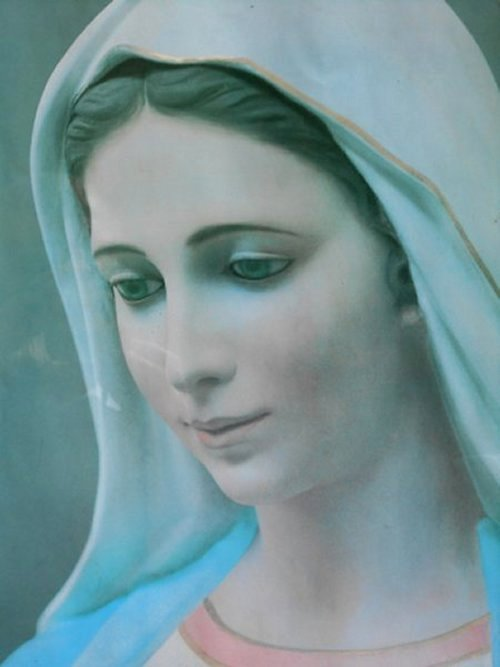

NOSSA MÃE
TÃO AMOROSA
GRANDE ESTÍMULO
Sendo a
Igreja, um local mais especial e sagrado, por que nela se encontra o DEUS Vivo e
verdadeiro no SANTÍSSIMO SACRAMENTO, as Aparições na Igreja trouxeram uma
novidade admirável e preciosa a todos os peregrinos e visitantes, que se
transformou num poderoso estímulo para aquelas pessoas que frequentavam
Mediugórie. Só a presença da VIRGEM MARIA já era um convite a prece, a oração do
Terço, ao cultivo intenso do amor que prazerosamente, visivelmente envolvia e
abraçava todos os presentes, numa perfeita e honesta irmandade harmoniosa,
independentemente da nacionalidade ou da cor da pele das pessoas, convidando-as
ao cultivo e ao fervoroso exercício das Orações do Rosário. Então, cada coração,
repleto de ternura, falava e rezava com voz plena de carinho, embargada pela
emoção e pelas lágrimas caudalosas que desciam e umedeciam a face. Era à
força do amor, do amor puro e sem fronteiras, que repetindo a Ave-Maria, o Pai
Nosso, a Salve Rainha, as outras preces e as Jaculatórias, tornavam vigorosamente
real a força Divina, que envolvia cada espírito e enchia de ternura
os corações, expressando a maravilhosa e deslumbrante certeza da presença da MÃE
DE DEUS junto a todos, na Igreja.
COMO SE
APRESENTAVA A MÃE DE DEUS
Todos os
videntes são unânimes em afirmar que não existem palavras que possam descrever
de modo autêntico e real, a beleza de NOSSA SENHORA. A VIRGEM MARIA se apresentava
jovem com uma idade aproximada de 20 anos, com traços finos, bem definidos e
encantadoramente bem acabados, e com aspecto impressionantemente maravilhoso.
Tem os cabelos escuros e lisos, os olhos azuis e as faces rosadas. O rosto é
ligeiramente oval e assume as diferentes expressões do mesmo modo que todas as
pessoas revelam a cada momento, em função das manifestações do próprio íntimo.
Assim, ela pode se apresentar alegre, sorridente ou triste, e até com lágrimas
nos olhos. Normalmente, em Mediugórie, usou vestido longo na cor cinza, cobrindo
completamente os pés, e tem a cabeça coberta por um véu branco. Sobre a cabeça
está uma linda coroa de ouro com 12 estrelas. Os pés estão apoiados numa nuvem,
não tocam o chão. Sua voz é agradabilíssima, é como se fosse uma doce e suave
melodia. Tudo é lindo e magnífico em NOSSA SENHORA, diziam os videntes. O
encontro com a VIRGEM MARIA é como se o Céu se abrisse diante deles, por que é
um acontecimento tão admirável e inexplicável, que não existem palavras que
possam descrever fielmente aquele adorável momento!
VIDA DE NOSSA
SENHORA
 A VIRGEM MARIA
descreveu para os jovens a sua vida em Nazaré, e pediu que eles anotassem e
guardassem. Vicka anotou tudo minuciosamente e ficou encarregada de publicar o
livro, depois de autorizada pela Nossa MÃE SANTÍSSIMA. A vidente terminou de
escrever no dia 10 de Abril de 1985, preenchendo três grandes cadernos com todos
os relatos.
A VIRGEM MARIA
descreveu para os jovens a sua vida em Nazaré, e pediu que eles anotassem e
guardassem. Vicka anotou tudo minuciosamente e ficou encarregada de publicar o
livro, depois de autorizada pela Nossa MÃE SANTÍSSIMA. A vidente terminou de
escrever no dia 10 de Abril de 1985, preenchendo três grandes cadernos com todos
os relatos.
NOSSA SENHORA disse aos
videntes: “Guardem bem isso na memória e anotem, por que
virá o tempo em que vocês poderão contar esta narrativa às pessoas”.
Vicka disse
que ao escrever a Vida de NOSSA SENHORA, quando havia um assunto que ela não
entendia claramente, perguntava a VIRGEM, obtendo explicação através de uma
imagem que ELA fazia aparecer.
Perguntada
pelos jovens, NOSSA SENHORA disse que a data do Seu Nascimento é o dia 5 de
Agosto. No início de Agosto de 1984, a SANTÍSSIMA VIRGEM deu a seguinte
mensagem:
- “Queridos filhos!
Preparem o segundo milênio do MEU Nascimento que será no dia 5 de Agosto de
1984. Através dos séculos, consagrei toda a MINHA Vida à humanidade. Será muito
para vocês ME consagrar três dias de atenção? Naqueles dias não trabalhem, mas
peguem o Terço e rezem”.
Naquele dia 5
de Agosto aconteceram coisas maravilhosas, foram muitos os testemunhos de
conversão e de graças recebidas por centenas e centenas de pessoas.
Também a
mencionada data, oferece um aspecto esclarecedor e confirmador a respeito da
idade de MARIA, e do Nascimento de JESUS. Veja o raciocínio. O segundo milênio
do Nascimento da VIRGEM MÃE foi no dia 05/08/1984. O milênio são mil anos. A
data mencionada por ELA soma 1.984 anos. Assim sendo, ficam faltando exatamente
16 anos para completar 2.000 anos, ou seja, o segundo milênio completo. Isto
significa dizer, que o nosso calendário que tem início no Nascimento de JESUS,
quando ELE Nasceu, a VIRGEM MARIA tinha exatamente 16 anos de idade. Então esta
era a idade DELA no Ano Zero Cristão, ou seja, no Ano em que NOSSO SENHOR
nasceu. E por outro lado, então podemos dizer que a MÃE DE DEUS nasceu 16 anos
antes do Calendário Cristão.
Em conversa com os videntes,
NOSSA SENHORA falou que estas Aparições em Mediugórie têm o fim específico de
alertar e convidar as pessoas a converterem o coração, a se empenharem em
construir um caminho de santidade, como forma de retribuir o imenso e infinito
amor de DEUS pela humanidade, que primordialmente se manifestou carinhosamente
ao conceder a cada pessoa, o dom da própria vida. E além da vida, o CRIADOR
concedeu também a plena liberdade de movimento, de pensamento e de ações a todos
nós. Se com a liberdade que as pessoas recebem, elas não procurarem unir as suas
vidas a DEUS, elas crescerão pessoas indiferentes, frias e com sentimentos
desajustados. Por isso mesmo, a conversão do coração é necessária a todos, a fim
de possibilitar desabrochar em plenitude o amor, a harmonia e a fidelidade, que
também estão albergadas e ocultas no coração humano, produzindo o alegre júbilo
da vida e receber o precioso dom da paz que vem do Coração do SENHOR, dom que o
PAI ETERNO derrama carinhosamente sobre todos os seus filhos que O amam. E por
isso também, por ser ELA uma permanente divulgadora da "PAZ", nesta
Aparição de Mediugórie, a VIRGEM MARIA gostaria de ser denominada
“RAINHA DA PAZ”.
Para confirmar o desejo da MÃE
DE DEUS, no dia 24 de Agosto de 1981, muitas pessoas, inclusive o Padre Iozo
Zovko, viram uma grande inscrição no céu, sobre a Montanha do Krisevac (Monte
Podbrdo ou Colina das Aparições) a palavra “MIR”, em grandes letras incandescentes
(MIR em croata significa PAZ), que nos faz entender como sendo a mensagem central das
Aparições em Mediugórie.
No início das Aparições os
jovens faziam muitas perguntas a NOSSA SENHORA, eram questões geralmente
solicitadas pelos presentes, e também pela curiosidade pessoal de cada um deles.
Perguntava por pessoas falecidas da família, por doentes, pela conversão de
alguém, o que levou a VIRGEM a dizer num dia: “Não ME perguntem nada”. Mas na continuidade,
os jovens continuavam a perguntar, por que as pessoas sempre lhes pediam. ELA nunca se
aborrecia, mesmo diante de perguntas inconvenientes! ELA não respondia, e passava
para outra pergunta, ou discretamente começava a rezar. Quando ELA começou a descrever
a Sua Vida, não havia tempo para as perguntas. Logo que chegava, saudava os jovens e
começava a relatar a Sua Biografia. O tempo de duração de cada Aparição estava
em torno de 5 a 10 minutos. Entretanto, houve ocasiões em que foi bem mais longo,
quando ELA explicava algum ensinamento, ou quando estava descrevendo fatos da
Sua Própria Vida. Terminado o tempo da Aparição, ELA rezava com os videntes
e SE despedia como de costume, retornando ao Céu.
OS SEGREDOS
NOSSA SENHORA também
revelou aos videntes 10 Segredos, que só serão anunciados em ocasiões
definidas e exatamente, três dias antes deles se realizarem. Significa dizer que
os Segredos são fatos que irão ocorrer e tem data certa para a sua concretização.
Quanto ao conteúdo, a VIRGEM MARIA apenas anunciou genericamente os assuntos,
dizendo que alguns estão relacionados com o futuro do mundo e da Igreja e
preconizam advertências ou castigos à humanidade, por causa dos muitos pecados.
Outros são de caráter pessoal e se referem aos videntes e a Paróquia de Mediugórie.
Mirjana, Ivanka e Marija Pavlovic não têm Segredos Pessoais. Mas todos os Segredos,
até o momento, permanecem ocultos e serão revelados apenas
quando a MÃE DE DEUS permitir.
Os três primeiros Segredos
virão como forma de advertência. Depois aparecerá o “Grande SINAL”.
O 9º e o 10º
Segredos contêm castigos ainda mais graves. Por isso, NOSSA SENHORA suplica
maternalmente a urgente conversão do coração de toda humanidade.
Mirjana e
Ivanka já receberam os 10 Segredos, por isso elas não têm mais as Aparições
diárias, mas apenas no dia do aniversário ou em ocasiões especiais.
Ivan, Vicka,
Marija e Jakov receberam 9 Segredos. Para eles, as Aparições diárias continuam
normalmente aonde se encontrarem.
Mirjana foi escolhida pela MÃE
DE DEUS para revelar os Segredos a humanidade, quando ELA autorizar. A VIRGEM MARIA
entregou a vidente uma folha com os 10 Segredos escritos. A folha é visível, mas
os Segredos estão ocultos. Se uma pessoa conseguir olhar a tal “Folha dos Segredos”,
somente verá escrito um trecho da Bíblia, um Cântico, ou algum texto religioso, mas
não verá nenhum dos dez Segredos. Padre Petar Lijubicic foi escolhido por Mirjana
para anunciar o Primeiro Segredo. Assim, 10 dias antes de acontecer o Primeiro Segredo,
Mirjana e o Padre serão informados, e eles permanecerão durante sete dias em jejum
e fervorosas orações. Quanto faltarem três dias para a realização do Segredo, eles
irão comunicá-lo ao mundo. E assim, com idêntico procedimento serão anunciados os
outros Segredos, que virão logo em seguida, com curto espaço de tempo entre
a realização de cada um.
NOSSA SENHORA acrescentou:
"Quando os Segredos forem realizados,
o poder de satanás será destruído”.
O GRANDE SINAL
Acusados de
mentirosos e inventores de histórias, os videntes passaram maus momentos que não
puderam evitar. Então pediram a NOSSA SENHORA que SE mostrasse para as outras
pessoas, a fim delas acreditarem nas suas palavras, e compreendessem que mesmo
eles sendo jovens, não estavam brincando, mas falando a verdade. Então, a VIRGEM
MARIA prometeu deixar um SINAL na Colina das Aparições, para todos acreditarem
que ELA esteve em Mediugórie.
O SINAL será visível,
palpável, duradouro e indestrutível, será verdadeiramente uma manifestação
Divina, e assim, quem tocá-lo com fé e confiança, poderá receber a graça de uma
cura ou um milagre. Todos que forem a Mediugórie poderão vê-lo, e os videntes,
sabem quando ele será implantado e já o contemplaram, pois a VIRGEM MARIA lhes
mostrou em visão. A expressão dos jovens foi de plena e total admiração.
Disseram: “é muito bonito”!
Sobre a época em que virá o SINAL
permanente e indestrutível, Vicka repete o sentimento e as palavras da MÃE DE DEUS
afirmando: “ELA é sempre carinhosa
e preocupada com todos os seus filhos (com todos nós)
e por isso suplica com lágrimas nos
olhos: Convertam-se, não esperem
o SINAL; quando ele vier, poderá ser muito tarde.”
Vicka está certa que o
SINAL acontecerá durante a sua vida, antes que cessem as Aparições diárias ao
último dos videntes. Por outro lado, nossa MÃE SANTÍSSIMA não explicou o sentido
daquelas duas palavras “muito tarde”.
Provavelmente estivesse se referindo ao que acontecerá
ao mundo pela grandeza dos muitos pecados da humanidade. Isto porque, no aspecto pessoal,
a misericórdia de DEUS é infinita, e até no último instante da vida, a criatura
que se arrepender de seus muitos pecados, poderá conseguir o perdão Divino e não
ir para o Inferno. E assim, morrendo, irá para o Purgatório onde pagará tudo o
que deve a Justiça de DEUS.
Em 24 de Junho
de 1983, NOSSA SENHORA deixou uma mensagem sobre o Grande Sinal:
“O SINAL virá, mas
ninguém deve se preocupar com ele, ao contrário, deve aguardá-lo com alegria. A
única coisa que posso lhes dizer é que se convertam! Divulguem o SINAL para todas
as pessoas, o quanto antes. Para salvá-los, nenhuma dor e nenhum sofrimento
serão grandes para MIM. Sempre pedirei ao MEU FILHO que não castigue o mundo.
Mas é necessário que se convertam! É inconcebível viver uma existência de crimes
e insultos. O amor é essencial e precisa reinar em todos os corações. A
indiferença destrói e mata. Vocês não conseguem imaginar o que poderá acontecer se a
Justiça de DEUS manifestar o poder da Sua Força. Renunciem ao mal e façam
penitência. Sejam de fato Meus Filhos queridos e aceitem a Minha súplica. Por
favor! Ajudem-Me a converter o mundo”.
REZEM SEMPRE

Disse NOSSA SENHORA:
“Rezem, Rezem, Rezem Sempre, como puderem:
no ônibus, na rua, em casa ou na Igreja. Mas não deixem de rezar. Mesmo havendo distrações,
mesmo o pensamento voando para longe, não parem, continuem com as orações. EU estarei
sempre olhando por vocês”.
Na Vila de
Mediugórie, havia uma tradição antiga de se rezar 7 PAI NOSSO, 7 AVE MARIA e 7
GLORIA, para se alcançar as graças e a proteção de DEUS. Estas orações também
eram rezadas pelos idosos do local, em honra as sete dores de NOSSA SENHORA.
Quando a VIRGEM MARIA chegou os jovens estavam rezando as mencionadas orações.
Então, ELA pediu às crianças que colocasse no início a oração do CREDO, que era
a prece preferida DELA. Vicka contou que quando começava a rezar a oração do
CREDO, via uma imensa felicidade nas faces da VIRGEM MARIA, que não cessava de
sorrir, um sorriso amoroso e autêntico, sem nenhuma afetação. Na continuidade
dos encontros, nossa MÃE SANTÍSSIMA ensinou, rezem primeiro o CREDO e logo a
seguir: rezem os cinco primeiros PAI NOSSO, 5 AVE MARIA e 5 GLÓRIAS em honra das
Chagas das Mãos, dos Pés e do Peito de JESUS; depois rezem o sexto (6º) PAI NOSSO, AVE MARIA
e GLÓRIA pelo Papa, e finalmente rezem o sétimo (7º) PAI NOSSO, AVE MARIA e GLÓRIA, pedindo
ao Divino ESPÍRITO SANTO para olhar por cada um de vocês, pela família, e pela paz e
harmonia no mundo inteiro.
Jamais, em qualquer parte do
mundo, NOSSA SENHORA apareceu diariamente e durante tanto tempo, como está
acontecendo em Mediugórie! Mas a VIRGEM tem uma explicação clara e urgente: é o
Plano de DEUS! E disse:
"EU venho
para chamar pela última vez, o mundo à conversão. Depois dessas Aparições em
Mediugórie, não mais aparecerei em nenhum local. Este é um tempo especial para a
humanidade, em que são concedidas muitas graças e o Céu convida todos os povos à
conversão. Depois, virá um segundo período, tempo de dura purificação da
humanidade e, por último, o terceiro período, quando será a manifestação de
DEUS".
NOSSA SENHORA não se alongou
em explicações, por essa razão, deixou-nos a possibilidade de imaginar que o terceiro período se refere ao
Final dos Tempos, quando então DEUS se manifestará definitivamente. Por isso
mesmo, a palavra da VIRGEM é firme e urgente:
"Convertam-se enquanto há tempo".

 PRÓXIMA PÁGINA
PRÓXIMA PÁGINA
PÁGINA ANTERIOR
RETORNA AO ÍNDICE